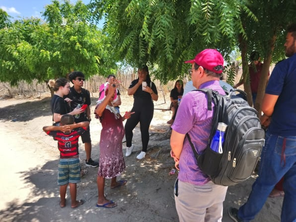

Jornada Completa


A Comunidade Quilombola de Cariacá carrega em sua história, em forma de combate a resistência, festejos e atividades culturais que reafirmam sua trajetória e buscam reconhecimento e determinação, a fim de expandir e garantir benfeitorias atraindo com maior magnitude uma expansão territorial, cultural, educacional, entre outras.
Lá no Piemonte Norte do Itapicuru na Cidade de Senhor do Bonfim, mais precisamente na comunidade de Cariacá, me encontrei com a história e a trajetória política, ontem, hoje e sempre uma comunidade remanescente dos indios cariris e descendentes de negros congos. Liberdade, liberdade, igualdade, equidade e justiça é nosso sonhar!
Cariacá, em Senhor do Bonfim-BA, é uma comunidade quilombola que celebra sua identidade como afro-Indígena, originando-se inicialmente pelos cariris e, posteriormente, pelos congos. O nome Cariacá é uma homenagem a um rio nas proximidades, embora haja também a sugestão de que remonte a uma tribo indígena cariri que habitava a região.
Desde 2017, melhorias foram implementadas, como a pavimentação na entrada. Contudo, desafios persistem, incluindo a presença de um lixão e invasões de casas por Muricy, que afetaram a população. Com aproximadamente 200 famílias, a comunidade está situada a 10 km do centro da cidade.
Certificada como comunidade quilombola pela Fundação Cultural Palmares em 2005, Cariacá é composta por subdivisões, como Cariacá de Baixo, de Cima e Morrinhos. Destacam-se também casas antigas e históricas, incluindo o Casarão da Senhora Trindade Muricy.
Infelizmente, muitos moradores enfrentaram e ainda enfrentam situações de racismo, evidenciando desafios sociais que requerem atenção e ação para promover igualdade e justiça na comunidade. No entanto, a comunidade não está isenta de desafios sociais, com muitos moradores enfrentam situações de racismo. A questão dos direitos humanos emerge como um ponto crucial, exigindo uma abordagem abrangente para promover igualdade, justiça e dignidade para todos os habitantes de cariacá. As violações de direitos humanos, como invasões de propriedade e discriminação racial, demandam atenção e ação efetiva para garantir o pleno respeito aos direitos fundamentais dessa comunidade.
“Aos esfarrapados do mundo e aos que nele se descobrem e, assim descobrindo-se, com eles sofrem, mas, sobretudo, com eles lutam.” Paulo Freire
A comunidade enfrenta desafios significativos em relação à saúde, com um posto que oferece atendimento apenas quinzenalmente, gerando grandes reclamações entre os moradores. Uma preocupação adicional é a ausência de um agente comunitário de saúde que possa direcionar os encaminhamentos para consultas e exames especializados, essenciais para atender às necessidades da população. Infelizmente, até o momento, nenhuma solução foi implementada para abordar essas questões cruciais.
Essa situação não apenas reflete uma deficiência no acesso à saúde, mas também levanta preocupações sérias em relação aos direitos humanos na comunidade. O direito à saúde é fundamental e está intrinsecamente ligado à dignidade humana.
A falta de atendimento regular e de um profissional de saúde dedicado compromete esse direito básico, afetando diretamente a qualidade de vida dos residentes. A ausência de medidas efetivas para solucionar esses problemas é uma questão que merece atenção imediata no âmbito dos direitos humanos.
Garantir o acesso equitativo a serviços de saúde adequados é uma obrigação fundamental, e a comunidade de Cariacá merece uma abordagem proativa para corrigir essas deficiências e assegurar que os direitos fundamentais de seus moradores sejam respeitados e protegidos.
A presença de uma escola municipal em Cariará que oferece ensino fundamental, educação infantil e o EJA (Educação de Jovens e Adultos) no turno noturno é um pilar crucial para o desenvolvimento educacional e social da comunidade. Este estabelecimento educacional desempenha um papel essencial em proporcionar oportunidades de aprendizado desde os primeiros anos até a fase adulta, abraçando a diversidade de idades e estágios educacionais.
A oferta de educação infantil e ensino fundamental não apenas molda o presente, mas também lança as bases para um futuro mais promissor. Garantir que o EJA esteja disponível no turno da noite demonstra um compromisso com a inclusão, reconhecendo as diferentes trajetórias de aprendizado e permitindo que aqueles que não concluíram sua educação formal no tempo convencional possam fazê-lo.
Cariacá é um lugar rico em diversidade religiosa, abrigando várias igrejas que desempenham papéis significativos na vida espiritual da comunidade. A Igreja Católica, com Santa Rita como padroeira, é uma presença marcante, proporcionando um espaço de devoção e celebração para os católicos locais.
A devoção a Santa Rita, conhecida como a santa das causas impossíveis, cria uma base espiritual sólida para os fiéis e a devoção que se estrutura em São Sebastião, na qual, essa devoção encontra-se associada à vertente da cura. Além da Igreja Católica, a comunidade também é abençoada com a presença de quatro igrejas evangélicas distintas. A Igreja Batista, a Congregação Cristã, a Assembleia de Deus e a Adventista do Sétimo Dia oferecem opções variadas para os membros da comunidade praticarem sua fé.
Cada uma dessas denominações contribui para a diversidade espiritual, atendendo às diferentes tradições e estilos de adoração. As tradições religiosas presentes em Cariará desempenham um papel vital na coesão social e no fortalecimento do tecido comunitário.
Além dos serviços religiosos regulares, essas igrejas muitas vezes desempenham um papel central em eventos comunitários, celebrações e atividades beneficentes, reforçando laços entre os residentes. Essa convivência harmoniosa de várias expressões de fé enriquece a tapeçaria cultural da comunidade, promovendo a compreensão mútua e o respeito pelas diferenças.
A diversidade religiosa não apenas contribui para a espiritualidade individual, mas também para a coexistência pacífica e a solidariedade entre os habitantes de Cariacá. É importante reconhecer e celebrar essa diversidade religiosa como parte integrante da identidade da comunidade, promovendo um ambiente de tolerância e respeito. Ao fazê-lo, Cariacá continua a ser um exemplo de como diferentes crenças podem coexistir harmoniosamente, enriquecendo a experiência espiritual e cultural de todos os seus membros
Santa Rita é a fonte de devoção e relevância expressiva de fé da comunidade do distrito de Cariacá, com diversos e numerosos devotos na abrangência de todo o território quilombola e nas comunidades circunvizinhas.
Santa Rita conhecida como intercessora das viúvas, idosos, casais, mães, enfim, por todos (as) os (as) que sofrem e necessitam da obtenção de graças impossíveis. (grifo nosso).
Descreve Santos (2021), “Santa Rita é celebrada durante todo o ano por seus fiéis nas atividades promovidas pelo grupo de oração que às terças-feiras se reúne para rezar o terço. O estandarte da santa é conduzido periodicamente para as casas das madrinhas do cruzeiro, de pessoas doentes e dos devotos mais assíduos, que participam das atividades religiosas na capela e contribuem para divulgar a devoção.”
Dos três santos católicos celebrados no mês de junho, ele é talvez o mais popular. Para muitos, porque ele é casamenteiro e são incontáveis as simpatias que o envolvem para se encontrar o amor verdadeiro. Para outros, ele é o santo dos milagres e da compaixão. Com muitas devoções e simpatias, esse santo é sempre lembrado por seu poder de atrair pessoas amadas e casamentos.
Santo Antônio foi canonizado pelo papa Gregório IX e se tornou santo em 30 de maio de 1232. Aigreja católica o escolheu para ser uma das figuras cultuadas pela instituição devido à fama do português,que ficou conhecido por sua santidade e pelos relatos de milagres que teria operado. Ele é dono daschaves dos portais, encruzilhadas e caminhos.
E Santo Antônio, na tradição cristã, é um peregrino, ele anda por tudo quanto é lugar, da mesma forma que Exu é o Senhor dos Caminhos, assim como Ogum Xoroquê.
Para Santos (2021), “A “proteção” e os “guias” são concebidos como seres sagrados, sejam santos católicos ou não. São bons, não fazem “brincadeiras” ou “encantos”, apenas cuidam sempre de seus protegidos, especialmente nas situações adversas. A proximidade com esses seres “sagrados” constitui um tipo de fé que dialoga com o dia-dia desses sujeitos, sem os fundamentalismos das instituições externas. Tudo ocorre de modo intuitivo, entre “protegido e protetor”, “guia e guiado”.”
Em 1925, a comunidade foi assolada por um surto de febre amarela que dizimou mais da metade de seus habitantes. À época, uma cearense que residia no Cariacá de Cima fez uma promessa para São Sebastião; uma promessa perante o qual se comprometia, caso a comunidade se livrasse do surto de febre, ela ergueria uma capela em frente à igreja de São Sebastião. Dito e feito, ela construiu a capela em frente do cemitério. (grifo nosso)
A Comunidade Quilombola de Cariacá carrega em sua história, em forma de combate a resistência, festejos e atividades culturais que reafirmam sua trajetória e buscam reconhecimento e determinação, a fim de expandir e garantir benfeitorias atraindo com maior magnitude uma expansão territorial, cultural, educacional, entre outras.
Na antiguidade havia, como celebração, a “noite dos leites” realizada pela Família Congo. Foi demarcada por piadas racistas cometidas pelas famílias Muricy e Tobodi com desumanização intensa a ponto de precisar de intervenção do Padre da Igreja de Senhor do Bonfim. Lamentavelmente isso ocasionou em uma quietude desenvolvendo o “não dito”.
Nos primórdios existiram a Lapinha Cantada, que ainda permanece ativa, o Terno de Reis e a Roda do Povoado de Cariacá, que se encontram desativados desde o fim de 1990, sendo assim um legado cultural. São conhecidos em outras comunidades, quilombolas ou não, e também pela própria cidade de Senhor do Bonfim.
Reisado e a Roda do Povoado de Cariacá, com Dona Luci como a principal organizadora, eram em formato de “brincadeiras”, este último composto de setenta pessoas, apresentados na época junina na Praça Nova do Congresso por todas as famílias tradicionais, não havendo desigualdades.
Caracterizando a cultura, também é de grande relevância a Lapinha Cantada, entoada por Dona Luci, carregando versos cantados em épocas de Natal, em que as famílias enfeitam seus lares para essa data extremamente importante. É um costume que sobrevive desde o passado até aqui. Nesses momentos as mulheres que faziam parte mentalizavam, nesses cânticos, o processo de espiritualidade atraindo bonanças para suas casas.
Glícia Milena Gomes da Silva é líder quilombola na Vila-Centro, capoeirista, desenhista, criadora do grupo Quilombart, estudante de Pedagogia e professora de dança. O Grupo de Dança Quilombart, fundado por Milena, é composto por crianças e jovens da família Congo, sendo atualmente constituído por mulheres. Conforme os mais velhos foram morrendo e as dificuldades econômicas surgindo, essa prática foi desaparecendo, porém hoje ainda perdura de forma latente. É uma dança com movimentos de capoeira, ou seja, dança Afro, misturando a história do quilombo e a arte.
É perceptível o valor observado nesses traços culturais, em que se contempla sobretudo a união dessas famílias que carregam em sua ancestralidade a história do Congo. Representa uma resistência histórica e carregada de opressão, em que mesmo com todo sofrimento vivido por cada um, há uma alegria por cada conquista.
Paula Odilon, nossa orientadora nesta pesquisa, descreve em sua Tese de Doutorado a seguinte explanação:
“Encenar a cultura pode servir de contributo para a recuperação da autoestima, construção de uma imagem positiva, fortalecimento do sentimento de pertença e para estimular o desenvolvimento de reflexividade no que diz respeito à ancestralidade.”
Luciana de Freitas Silva - Dona Luci - é professora aposentada da comunidade e liderança nas tradições culturais, além de quilombola possui ascendência indígena. Está nos transmite alegria durante a visita e, resumidamente, após cantar alguns versos disse que a alegria contagia e precisamos usar todo nosso empenho em ser feliz em todos os momentos, alegres e tristes, celebrando acima de tudo a vida e sorrindo a cada passo, realização, conquista e celebração, carregando consigo o enfrentamento de todas as barreiras.
Segundo Valmir santos, líder da associação dos quilombolas de Tijuaçu e Cariacá, coordenador estadual da comunidade quilombolas Bahia, o artesanato dentro da comunidade foi um marco muito revolucionário, pois o aprimoramento de pedras sempre foi almejado e teve toda uma luta para torna-se realidade. Dando início pelo grupo irmãos Pelegrini, fundada em 1984 foi pioneira no setor de pré-fabricados de concreto, dentro da comunidade, porém atualmente a produção de concretos vem trazendo problemas dentro da comunidade, como por exemplo a detonação dos concretos acabam prejudicando, fazendo com que os estrondos ocasionem as rachaduras, como também a destruição das casas que são atingidas por as pedras.
A redescoberta da etnicidade, a valorização do legado dos ancestrais, a reafirmação do sentimento de pertença, a reinvenção das religiosidades e práticas culturais constituem comportamentos que passaram a ser agenciados entre os membros de Tijuaçu, sob o estímulo das atitudes políticas e educativas propiciadas por meio do movimento “Barulho do Quilombo”. A partir do estímulo à tomada de consciência no que tange à ancestralidade quilombola, essas lutas passaram a conhecer pautas específicas e favoráveis ao fomento entre esses agentes, do desenvolvimento do sentimento de pertença associado à aceitação da categoria social quilombola, cujo significado produzido a partir da constituição de 1988.
O ressurgimento desses grupos tem possibilitado conhecer e articular deliberações específicas compatíveis com os desejos e necessidades, nutridos por sujeitos que tecem outras interpretações e transformam o anonimato projetado para sua categoria, em instrumento de luta e busca de equidade social.
O “Barulho do Quilombo” é, pois, um processo interno de natureza dialética que mantém lideranças de comunidades distintas em constante interação com as lideranças de Tijuaçu, desde as primeiras movimentações, para aprender os caminhos que precisariam atravessar até a certificação pela Fundação Cultural Palmares (FCP). Há, inclusive, uma comunicação prévia entre as associações para organizar um calendário de eventos que celebrem o Novembro Negro em datas alternadas nas diversas comunidades, divulgadas com antecedência por intermédio de convites impressos, possibilitando confraternização e fomento à conscientização, até então ausentes em muitos espaços da porção norte do sertão baiano. O Censo/2022, aponta que a cidade do Brasil com a maior população quilombola, está no norte do Estado, a cidade baiana de Senhor do Bonfim, com 15.999 quilombolas.
O movimento político e pedagógico “Barulho do Quilombo” tem início entre os grupos da porção norte da Bahia, por meio das movimentações dos membros de Tijuaçu, alargando-se para outras comunidades daquele contínuo étnico, bem como para regiões próximas, a exemplo das comunidades de Cariacá, Cruzeiro, Umburana, Passagem Velha, Conceição, Barreiras, Cabeça da Vaca, Cachimbo, Papagaio, Bananeira dos Pretos, Jiboia, Fumaça, Represa, Grota das Oliveiras, Alto Capim, Laje do Antônio, Lajedo, Coqueiro, Palmeira, Dionísia, Santa Cruz do Coqueiro, entre outras que, por meio das articulações produzidas, redescobrem sua etnicidade, haja vista que a comunicação e o intercâmbio entre esses grupos têm se mostrado fundamentais para o crescimento do número de comunidades que se autodeclaram quilombolas.
A trajetória empreendida por esse grupo permanece como referência para outras comunidades negras do entorno que buscam a certificação quilombola. Em muitas comunidades do norte baiano, as mobilizações e interações políticas começam a partir do contato estabelecido com lideranças de Tijuaçu, em função de sua experiência pretérita. O senhor Valmir dos Santos – presidente da Associação Agropastoril Quilombola de Tijuaçu e Adjacências (AAQTA) e membro do Conselho Estadual das Comunidades e Associações Quilombolas do Estado da Bahia (CEAQ/BA) – costuma ser muito solicitado para mediar esse rito de passagem.
Para Valmir (2023), viver em uma comunidade quilombola é lutar intensamente pelos seus direitos e buscar melhorias para o seu povo. É lutar constantemente e insistentemente por políticas públicas, por uma educação e saúde de qualidade, por habitação, pela regularização fundiária de suas terras, além da buscar por reconhecimento das comunidades quilombolas, em suma uma luta excessiva, pujante e intensa contra o preconceito racial.
Numa visita recente na comunidade Cariacá, nós estudantes da Faculdade Baiana de Senhor do Bonfim detectamos e vivenciamos a inexistência de Políticas Públicas, voltadas para o atendimento da comunidade com relação a saúde de qualidade, habitação, educação, infraestrutura com relação a rede de esgoto, asfaltamento e ou calçamento de algumas ruas em pleno século 21. Além de políticas voltadas para educação construtiva e reconstrutiva de aceitação e reconhecimento das comunidades quilombolas, bem como o combate ao preconceito racial arraigado desde os primórdios.
Neste contexto as comunidades quilombolas, reivindicam sua cidadania, buscam seus direitos, aliados pela vontade de melhorias para a comunidade. Se afirmam como quilombolas, incentivados em parte pelos benéficos que essa nomenclatura os proporcionou, aliado com a vontade de serem respeitados pelos “outros”, de ser dignos de uma cidadania plena.
Segundo Valmir santos, líder da associação dos quilombolas de Tijuaçu e Cariacá, coordenador estadual da comunidade quilombolas Bahia, o artesanato dentro da comunidade foi um marco muito revolucionário, pois o aprimoramento de pedras sempre foi almejado e teve toda uma luta para torna-se realidade. Dando início pelo grupo irmãos Pelegrini, fundada em 1984 foi pioneira no setor de pré fabricados de concreto, dentro da comunidade, porém atualmente a produção de concretos vem trazendo problemas dentro da comunidade, como por exemplo a detonação dos concretos acabam prejudicando, fazendo com que os estrondos ocasionem as rachaduras, como também a destruição das casas que são atingidas por as pedras.
A experiência dos povos quilombolas na Bahia é digna de apreço e consideração. A vivacidade que caracteriza suas celebrações e manifestações culturais reflete uma rica tradição impregnada de resistência e identidade.
Nos eventos festivos, observa-se uma atmosfera vibrante, permeada por batuques, danças e culinária tradicional, todos elementos que evidenciam a profundidade das raízes culturais dessas comunidades. A energia positiva manifesta-se como uma expressão autêntica da herança ancestral, criando um ambiente de respeito e apreciação.
Paula Odilon Santos
1 - Carla Taísa Mota Freitas
2- Carlos Gabriel dos Santos Souza
3- Elias Morato Neto
4- Gabrielle Cezar de Souza
5- Isaque Souza Gomes
6- João Felipe Vitor Brito Santos
7- Marenilde Santana dos Santos
8- Maria Luiza Carvalho dos Santos
9- Maria Vitória Gonçalves Nascimento
10- Michele Costa de Jesus
11- Rafael Felipe da Silva Neto
12- Sidnei de Oliveira Carneiro
13- Victória Souza Santiago
14- Wilian Costa Feitosa
15- Yasmin Moreira Angelim
Observação: fotos do acervo pessoal da professora e dos alunos.